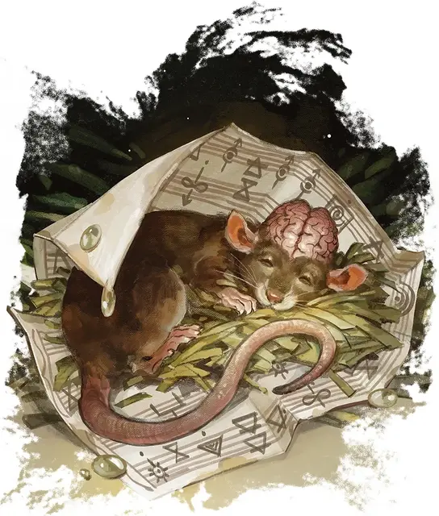

Черепная крыса пискунья
Cranium Rat Squeaker
Крошечная Аберрация, без мировоззрения

Класс Доспеха 12
Хиты 2 (1к4)
Скорость 30 футов
| мод | спас | ||
|---|---|---|---|
| СИЛ | 2 | −4 | −4 |
| ЛОВ | 14 | +2 | +2 |
| ТЕЛ | 10 | +0 | +0 |
| мод | спас | ||
|---|---|---|---|
| ИНТ | 4 | −3 | −3 |
| МДР | 11 | +0 | +0 |
| ХАР | 8 | −1 | −1 |
Чувства тёмное зрение 30 футов, пассивное Восприятие 10
Языки Телепатия 30 фт. (только эмоции)
Опасность 0
Бонус мастерства +2
Особенности
Телепатический покров. . Черепная крыса имеет иммунитет к любому эффекту, который может почувствовать её эмоции или прочесть её мысли, а так же ко всем заклинаниям прорицания.
Общая телепатия. Любое существо, прикоснувшееся к черепной крысе, может использовать телепатию крысы, если крыса позволяет это. Если существо знает какой-либо язык, оно может использовать телепатию для передачи слов и эмоций.
Действия
Укус. . Рукопашная атака оружием: +4 к попаданию, досягаемость 5 футов, одна цель. Попадание: 1 колющего урона.
Бонусные действия
Свечение. Бонусным действием черепная крыса может испускать тусклый свет из своего мозга в радиусе 5 футов или гасить его.
Описание
Черепные крысы пискуньи из Сигила не имеют никакого отношения к пожирателям разума, которые создали их прародителей. Скорее всего, эти волшебные грызуны сотрудничают с жителями Города Дверей, будь то простое сожительство или преследуя свои крупные амбиции. Когда пискуньи собираются в большом количестве, их стаи сливаются в единый разум с усиленными псионическими способностями и общей накопленной памятью его составляющих.